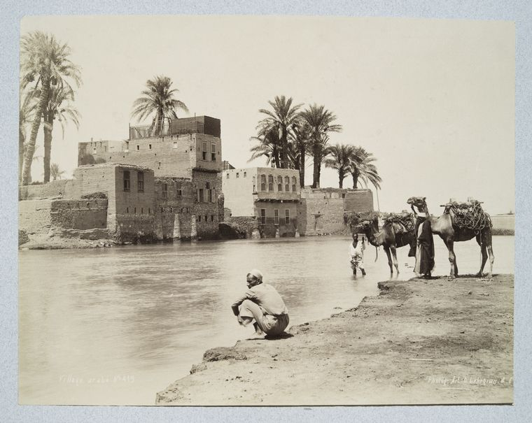
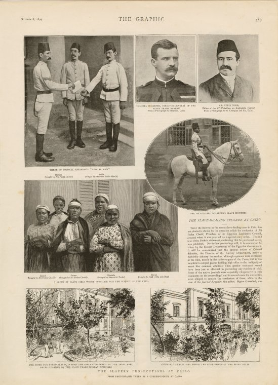
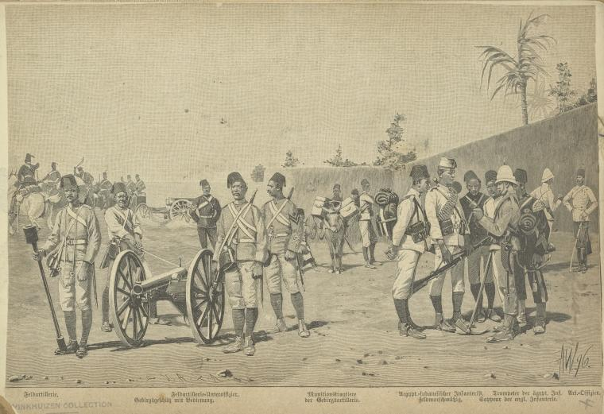
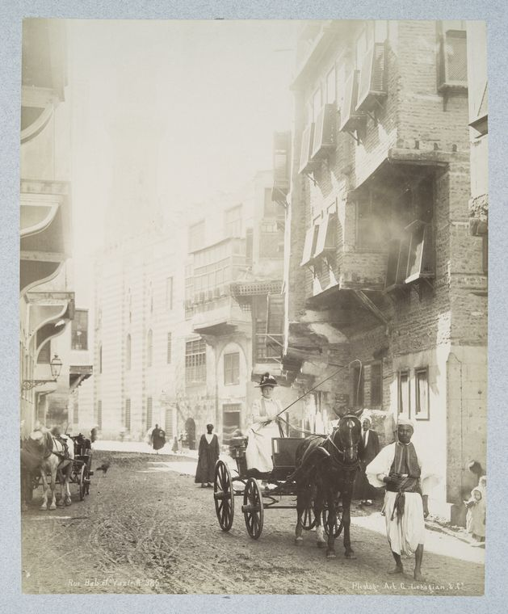
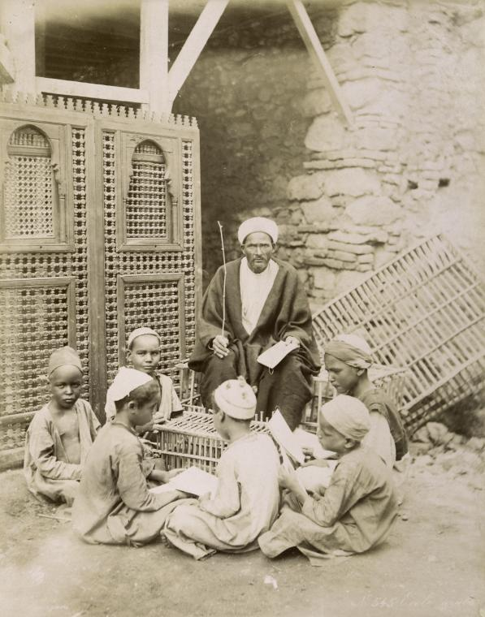

Egypt
Coins of all nations
Cigarette Card, 1889
Duke’s Cigarettes
Description here.
George Arents Collection, The New York Public Library. "China." The New York Public Library Digital Collections. https://digitalcollections.nypl.org/items/510d47de-34f1-a3d9-e040-e00a18064a99

Ch[...] mariage arabe.
Photograph, 1894
Zangaki (Photographer)
The Miriam and Ira D. Wallach Division of Art, Prints and Photographs: Photography Collection, The New York Public Library. "Ch[...] mariage arabe." The New York Public Library Digital Collections. 1894. https://digitalcollections.nypl.org/items/510d47d9-64ed-a3d9-e040-e00a18064a99

Village arabe Nº 419
Photograph, 1880-1889 (Approximate)
G. Lékégian (Photographer to the British Army of Occupation in Egypt), 1880-1889 (Approximate)
The Miriam and Ira D. Wallach Division of Art, Prints and Photographs: Photography Collection, The New York Public Library. "Village arabe Nº 419" The New York Public Library Digital Collections. 1880 - 1889. https://digitalcollections.nypl.org/items/510d47d9-6094-a3d9-e040-e00a18064a99

Bourriquier de place. Nº 352
Photograph, 1880-1889 (Approximate)
G. Lékégian (Photographer to the British Army of Occupation in Egypt), 1880-1889 (Approximate)
The Miriam and Ira D. Wallach Division of Art, Prints and Photographs: Photography Collection, The New York Public Library. "Bourriquier de place. Nº 352" The New York Public Library Digital Collections. 1880 - 1889. https://digitalcollections.nypl.org/items/510d47d9-609f-a3d9-e040-e00a18064a99

The slavery prosecutions at Cairo
Engraving from The Graphic, 1894
Schomburg Center for Research in Black Culture, Photographs and Prints Division, The New York Public Library. "The slavery prosecutions at Cairo." The New York Public Library Digital Collections. 1894-10-06. https://digitalcollections.nypl.org/items/977a4046-6bf0-0f5f-e040-e00a1806191a

The Vinkhuijzen collection of military uniforms
Illustration, 1910 (Inferred)
Vinkhuijzen, Hendrik Jacobus (Collector)
General Research Division, The New York Public Library. "Egypt, 1820-1898." The New York Public Library Digital Collections. 1910. https://digitalcollections.nypl.org/items/510d47e3-bbac-a3d9-e040-e00a18064a99

Rue Bab el-Vazir. Nº 385
Photograph, 1880-1889 (Approximate)
G. Lékégian (Photographer)
The Miriam and Ira D. Wallach Division of Art, Prints and Photographs: Photography Collection, The New York Public Library. "Rue Bab el-Vazir. Nº 385" The New York Public Library Digital Collections. 1880 - 1889. https://digitalcollections.nypl.org/items/510d47d9-609c-a3d9-e040-e00a18064a99

Ecole arabe
Photograph, 1894
Zangaki (Photographer)
The Miriam and Ira D. Wallach Division of Art, Prints and Photographs: Photography Collection, The New York Public Library. "Ecole arabe" The New York Public Library Digital Collections. 1894. https://digitalcollections.nypl.org/items/510d47d9-6508-a3d9-e040-e00a18064a99